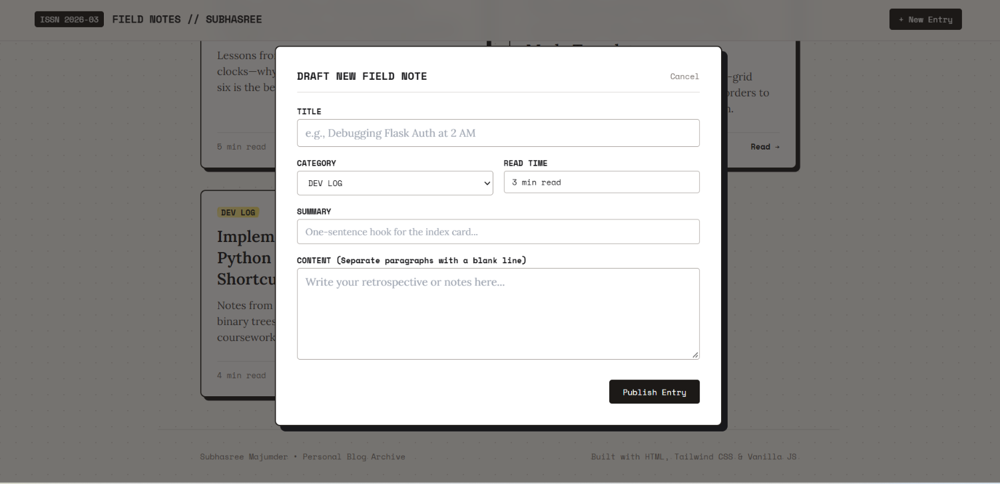

[01] To-Do List Application
Web AppA minimal, distraction-free task tracker built to organize daily study sprints, deadlines, and project checklists.


I’m a Computer Science (AI & Data Science) undergrad in Kolkata who enjoys turning weird ideas into functional software. Whether I’m wiring ESP32 robotics, coding 2D browser horror games, or shipping full-stack web apps on tight deadlines, I learn best by building things from scratch.
A minimal, distraction-free task tracker built to organize daily study sprints, deadlines, and project checklists.
A browser-based 2D survival horror adventure built with HTML5 and JavaScript. Navigate through dark environments with flashlight mechanics, evade a relentless stalker without looking back, and collect hidden shadow fireflies to unlock secret rewards.


A responsive writing space for publishing dev logs, hackathon retrospectives, and notes on design and technology.

